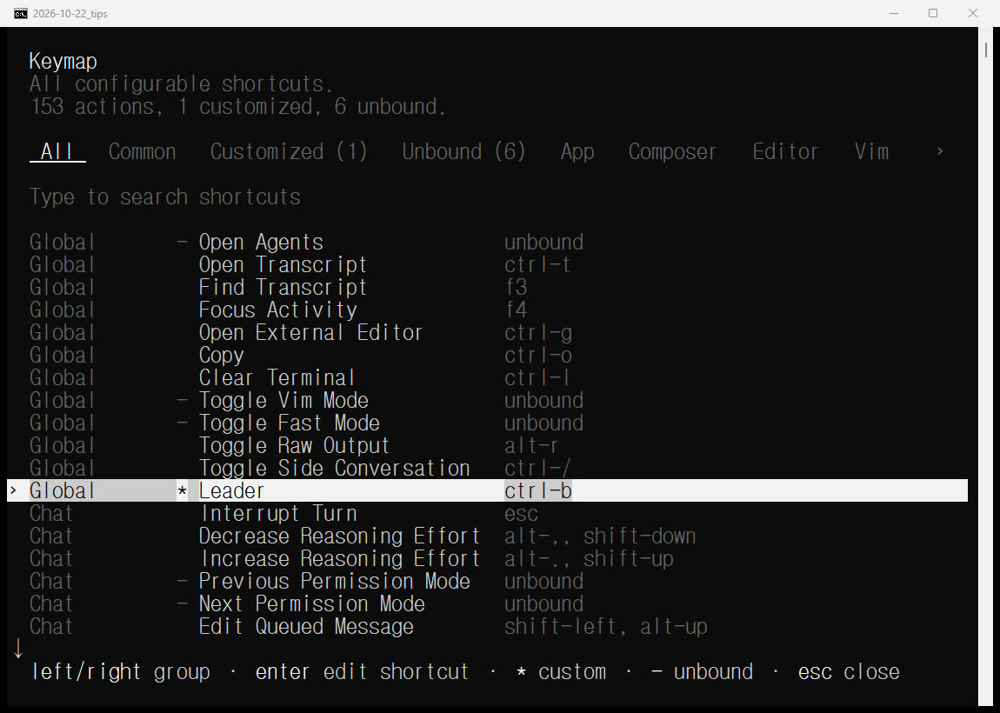
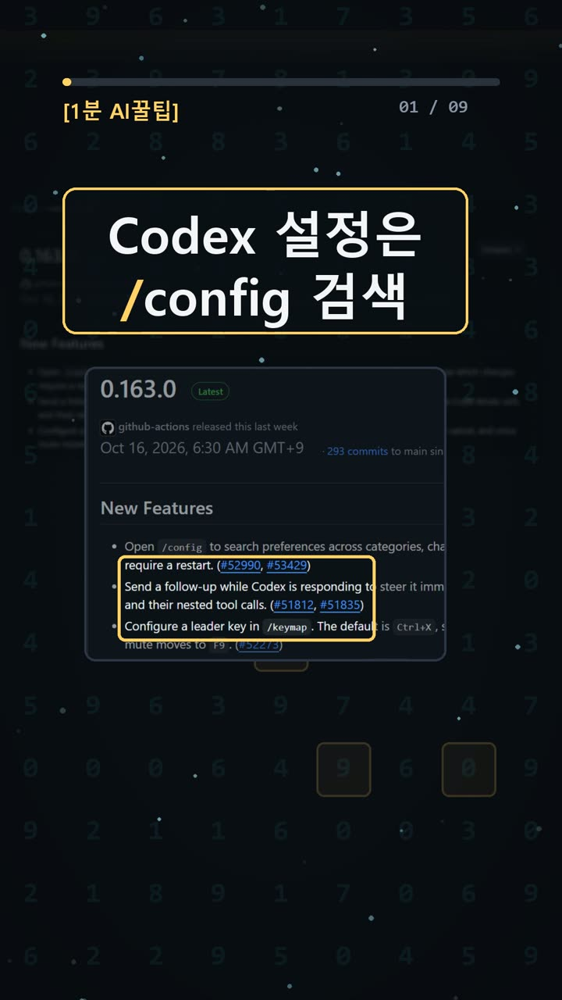
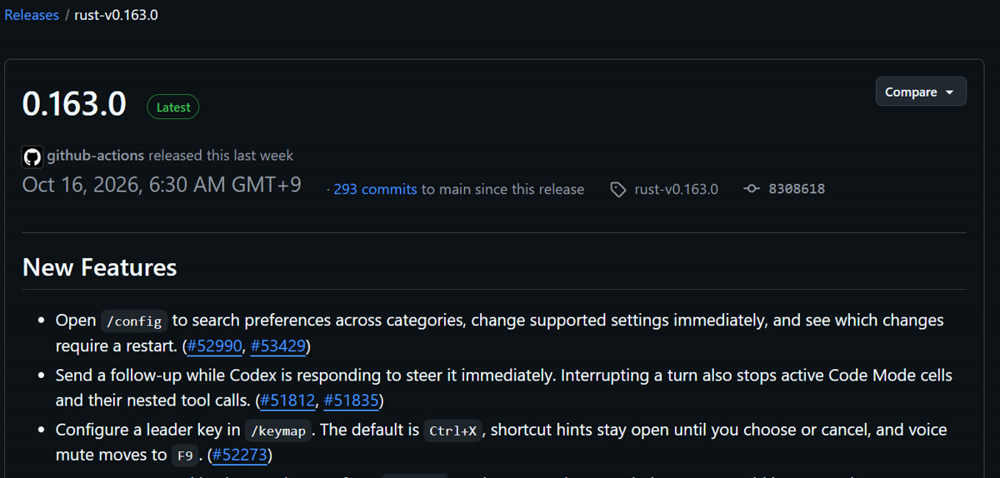
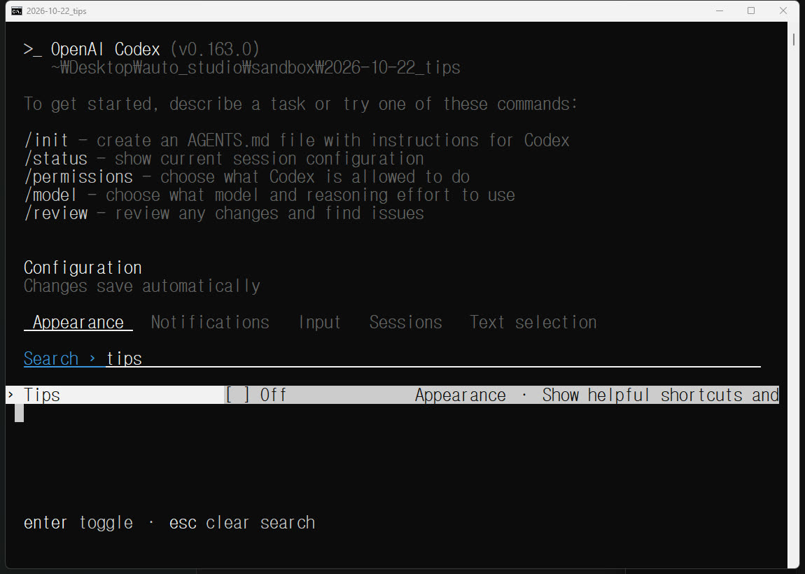

이 포스팅은 쿠팡 파트너스 및 토스쇼핑 쉐어링크 활동의 일환으로, 이에 따른 일정액의 수수료를 제공받습니다.
Codex 설정 검색은 /config, 단축키는 /keymap: 0.163.0 윈도우에서 직접 써 봄

검증 범위 · 직접 확인 기록 · 이 글은 2026-10-22에 공식 출처를 열어 보고 우리 PC에서 직접 확인한 기록(확인 수준: partial)을 바탕으로 AI 도구와 함께 정리했습니다.
명령어·설정·실패 해결표 바로 보기 (무료 공개)명령어·설정·실패 해결표
| 구분 | 내용 | 해결 |
|---|---|---|
| 설정 | /config | |
| 명령어 | /keymap | |
| 명령어 | npm install -g @openai/codex@0.163.0 | |
| 명령어 | codex --version |
한눈에 보기
- Codex CLI(터미널에서 쓰는 OpenAI의 AI 코딩 도구) 0.163.0부터
/config로 설정을 검색하고, 지원되는 설정은 바로 바꿀 수 있습니다. /keymap에서는 단축키 묶음의 시작 키인 리더 키를 바꿀 수 있습니다. 기본값은 Ctrl+X입니다.- 윈도우 PC 한 대에서 설정 검색, 켜고 끄기, 리더 키 변경과 원래대로 되돌리기까지 직접 해 봤습니다. 다만 일부만 확인했기 때문에 확인 수준은 partial(부분 확인) 입니다.
시작 전에 확인할 것
- 출시일: GitHub 공식 릴리스를 기준으로 2026-10-15 21:30(UTC)에 나왔습니다. 한국 시간으로는 2026-10-16 오전 6:30입니다.
- 운영체제(OS): 공식 문서는 Windows·macOS·Linux 설치 방법을 모두 안내합니다. 우리가 직접 해 본 환경은 Windows x64 한 대뿐입니다.
- 설치 방법: npm(Node.js 프로그램을 내려받는 도구), Homebrew, 독립 설치 파일 중에서 고를 수 있습니다(공식 README). Node.js가 꼭 필요한 건 npm으로 설치할 때뿐입니다. npm 패키지 0.163.0은 Node.js 16 이상이 필요합니다.
- 요금: 프로그램은 Apache-2.0 공개 소스라서 설치는 무료입니다. 하지만 AI를 쓰는 비용은 따로입니다. OpenAI 도움말에 따르면 Codex는 Free·Go를 포함한 ChatGPT 요금제에 들어 있고, 요금제마다 사용 한도가 다릅니다.
- 계정: ChatGPT 계정으로 로그인하면 됩니다. API 키는 꼭 필요하지 않습니다. API 키로 로그인하면 OpenAI Platform 표준 요금으로 따로 청구됩니다(공식 인증 문서).
설치 방법
방법 A: 공식 문서에 나온 전역 설치 📄 공식 문서 기준(이번에는 실행하지 않았어요)
1. npm을 쓸 수 있는 터미널에 아래 명령을 입력합니다.
npm install -g @openai/codex@0.163.0
2. 버전을 확인합니다.
codex --version
- 성공 확인: 출력된 버전이 0.163.0이면 됩니다.
방법 B: 우리가 쓴 폴더 안 설치 ✅ 직접 해 봄
프로그램은 빈 시험 폴더에만 설치했습니다. 폴더 안에 설치해도 설정은 분리되지 않습니다. 그래서 기존 설정을 건드리지 않도록 실행 전에 CODEX_HOME·SQLITE_HOME·TEMP를 이 시험 폴더로 지정했습니다. 이 방법은 관리자 권한이 필요 없습니다.
1. PowerShell에서 빈 폴더를 하나 만들고 cd로 그 폴더에 들어갑니다. 2. 그 폴더에만 설치합니다.
npm install --prefix . --no-audit --no-fund @openai/codex@0.163.0
- 성공 확인:
added 2 packages가 보이면 됩니다. 우리 PC에서는 이 명령 한 번에 21.072초 걸렸습니다.
3. 실행할 때는 보통 .\node_modules\.bin\codex.cmd --version(버전 확인)과 옵션 없는 .\node_modules\.bin\codex.cmd(대화 화면 실행)을 씁니다.
- 막히면: 우리 PC에서는 이
codex.cmd래퍼(실제 프로그램을 대신 불러 주는 작은 실행 파일)가 경로 오류로 실패했습니다. 아래처럼 설치된codex.exe를 직접 실행하니 잘 됐습니다.
$codex = Get-ChildItem .\node_modules\@openai\codex-win32-x64 -Recurse -Filter codex.exe | Select-Object -First 1 -ExpandProperty FullName & $codex --version & $codex
- 성공 확인:
codex-cli 0.163.0이 출력됩니다.
4. 처음 실행할 때 로그인 안내가 나오면 본인 ChatGPT 계정으로 로그인합니다. 📄 공식 문서 기준
- 이번에는 PC에 이미 있던 로그인 정보를 재사용했기 때문에 새로 로그인하지는 않았습니다.

사용 방법
/config로 설정 검색하기 ✅ 직접 해 봄
1. 대화 입력란에 /config를 입력하고 Enter를 누릅니다.
- 성공 확인: Configuration 메뉴가 열리고 Appearance, Notifications, Input, Sessions, Text selection 탭이 보입니다.
- 막히면: 우리는 명령과 Enter를 한 번에 자동으로 넣었을 때 메뉴가 열리지 않았습니다. Enter를 한 번 더 따로 누르니 열렸습니다.
2. 좌우 방향키로 탭을 옮기거나 /를 누른 뒤 tips처럼 키워드를 입력합니다.
- 성공 확인: 목록이 Tips 항목 하나로 좁혀집니다.
3. Enter를 누르면 Tips가 On과 Off로 번갈아 바뀌고, 따로 저장하지 않아도 자동으로 저장됩니다.
- 성공 확인: 화면에 Off가 표시되고 설정 파일
config.toml에show_tooltips=false가 저장됩니다.
4. 화면에 재시작이 필요하다는 안내가 나오는 항목은 그 안내대로 재시작합니다. 📄 공식 문서 기준

/keymap으로 리더 키 바꾸기 ✅ 직접 해 봄
1. Esc를 눌러 설정 메뉴를 닫고 /keymap을 입력합니다.
- 성공 확인: 153 actions, 0 customized, 6 unbound가 표시되고 Leader에
ctrl-x가 보입니다.
2. leader를 검색하고 Enter를 누른 뒤 Replace binding을 고르고 원하는 키를 누릅니다. 우리는 Ctrl+B를 눌렀습니다.
- 성공 확인: Leader가
ctrl-b로 바뀌고 Customized (1)이 표시됩니다.
3. 시험이 끝나면 Remove custom binding을 고르거나, 격리 설정 폴더의 config.toml에서 이번에 추가된 tui.keymap.global.leader 항목 한 줄만 지워서 기본값으로 되돌립니다.
- 성공 확인: Leader가 다시
ctrl-x이고 Customized (0)이 표시됩니다.

우리가 직접 해 본 결과
확인 수준은 partial(부분 확인) 입니다.
- ✅
/config에서 탭이 보였고,/검색과 Tips 켜고 끄기, 자동 저장까지 확인했습니다. 끝난 뒤 Tips는 다시 On으로 되돌렸습니다. - ✅
/keymap에서 리더 키를 Ctrl+X에서 Ctrl+B로 바꾸는 것과 원래대로 되돌리는 것까지 확인했습니다. - ✅
/keymap에서mute를 검색하니 Toggle Voice Mute에f9가 표시됐습니다. - ❌ F9로 실제로 음소거되는지는 시험하지 않았습니다. 음성 기능과 마이크는 켜지 않았습니다.
- ❌ 리더 키를 누르면 단축키 힌트가 계속 떠 있다는 내용은 릴리스 설명에만 있습니다. 우리가 Ctrl+X를 자동으로 입력해 봤는데 화면에서 힌트를 확인하지 못했습니다. 입력을 자동으로 넣는 방식 때문인지 기능 자체 문제인지 가릴 근거가 없어서 고장이라고 결론 내리지 않았습니다.
- ❌ 처음 계획은
config.toml을 직접 열어 고치는 방법과 시간을 비교하는 것이었습니다. 이 비교 실험과 화면 녹화는 하지 못했습니다. 그래서 몇 초를 아꼈다는 식의 주장은 하지 않습니다. 남은 건 화면 캡처 4장입니다.
예상과 달랐던 점도 있었습니다. 설치 자체는 금방 끝났는데, 정작 codex.cmd 래퍼가 실패해서 실행 경로를 다시 찾느라 시간을 썼습니다.
자주 막히는 곳
codex.cmd가 경로 오류를 낼 때: 위 설치 3단계처럼codex-win32-x64폴더 안의codex.exe를 직접 실행해 보세요. 시스템 PATH(프로그램을 찾는 경로 목록)를 고칠 필요는 없었습니다./config를 입력했는데 메뉴가 안 열릴 때: Enter를 한 번 더 눌러 보세요.- Unknown feature flag 오류가 날 때: 우리는 실행 옵션에
--disable app_server_daemon을 붙였다가 이 오류를 봤습니다. 이 옵션을 빼니 정상 실행됐습니다. - 공식 변경 기록에 0.163.0이 안 보일 때: developers.openai.com의 변경 기록은 열면 다른 changelog 페이지로 이동했고, 우리가 볼 때는 0.163.0 항목이 없었습니다. 버전 정보는 GitHub 릴리스 페이지에서 확인하세요.
- "모든 설정이 바로 바뀐다"고 오해하기 쉬움: 공식 설명은 *지원되는* 설정만 바로 바꿀 수 있다고 말합니다. 재시작이 필요한 항목은 화면에 따로 표시됩니다.
이번 실험의 한계도 적어 둡니다. 윈도우 PC 한 대에서 한 번 해 본 결과이고, macOS와 Linux는 시험하지 않았습니다. 측정 원문과 캡처는 AI 실험노트 한 곳에 모아 둘 예정입니다. 짧은 영상은 유튜브 쇼츠에 있습니다.
🧰 오늘의 실험실 생존 세트 — 밤새 실험 돌릴 때 쟁여 두는 것들


정리
설정 파일을 열어 항목 이름을 하나하나 찾는 대신, Codex 세션 안에서 /config로 검색해 바로 켜고 끌 수 있게 됐습니다. 리더 키도 /keymap에서 몇 번만 눌러 바꿀 수 있었습니다. 단축키 힌트와 F9 음소거는 아직 직접 확인하지 못했으니 다음에 다시 시험해 보겠습니다. 이 글은 실제 실험 기록을 바탕으로 AI 도구와 함께 정리했어요.
혹시 글에서 틀린 부분이나 고쳐야 할 부분이 보이면 유튜브·스레드 댓글로 알려 주시면 정말 감사하겠습니다. 바로 확인해서 고칠게요!
🛒 다시 보기: 오늘의 생존 세트
🎙️ AI 음성이 궁금하다면
우리 채널 내레이션은 타입캐스트를 쓰지만, 영어·다국어 AI 음성을 실험해 보고 싶다면 ElevenLabs도 많이 쓰여요.
[광고·제휴] ElevenLabs 둘러보기🎬 쇼츠로 다시 보기 · 🧵 함께 이야기하기
🧵 스레드 @alligatorxor에서 오늘 실험 이야기 나누기 · ▶ 유튜브 새AI실험노트 다른 쇼츠 보기 · 📒 실험노트 홈